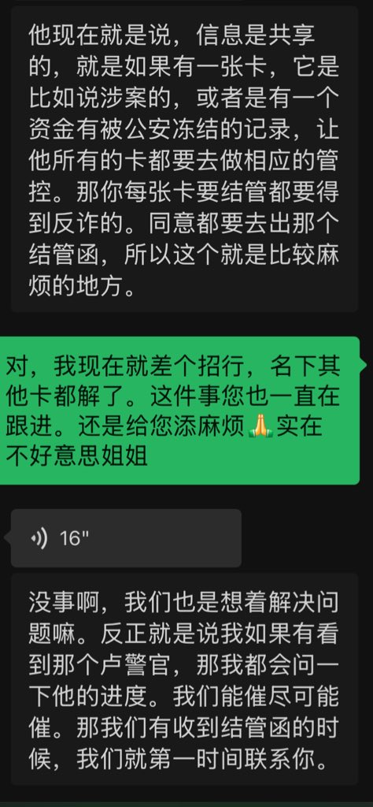

我觉得所谓的“开盒”真不如往对方银行卡打一笔黑钱，即使是0.01也足矣。主打一个支付宝三年日限500，微信零钱通永别，名下所有银行卡只进不出、限制非柜面。
自从伟大的国务院搞了国家反诈中心以后，误杀的乐子多的去了，昨晚分享汇丰冻结300亿，那外资行连个《涉诈风险审查表》都没有🙂↔️顺带一提，96110冻结和解封是两拨人，随便一个派出所冻结以后，反炸会顺便送上总对总管控，以及向全国各地的反诈中心推送大数据联网，有个专有名词叫做“涉诈线索下发表”，给你拉清单用的🥹最后你的境内账户包括支付宝和微信都会死光光～
当事人除非注销这张涉案卡，其他名下的银行卡才会自动解限。管他靓号还是理财户，一旦那张卡涉案最终的结局就是注销重开，不注销的话，名下其他银行卡你都得像上面说的那样多跑好几趟。
还想要靓号？不给你整个帮信罪就不错了！
否则就需要当事人拿着冻结机关给你的情况说明去开户行开具“解管函”，即《涉诈风险审查表》。通常会打印近半年的流水，柜员把这些解卡需要的材料丢进信封中密封，再交给客户。
再由客户亲自带着信封到开户行所属的辖区反诈中心（一般是基层派出所）求反诈叔叔同意解除管控。上面提到的那个表才会由反炸民警对公丢回开户行，最后开户行才会给你解除管控。
如果你像我一样喜欢收藏银行卡，那么每家银行你都得跑一趟。
如果你的中行在北京和上海都开过户，解银联卡需要跑北京，解万事达世界卡（莫奈卡）需要跑上海。全程自费，爽死你🤣
附：与招行客户经理的聊天记录

自从伟大的国务院搞了国家反诈中心以后，误杀的乐子多的去了，昨晚分享汇丰冻结300亿，那外资行连个《涉诈风险审查表》都没有🙂↔️顺带一提，96110冻结和解封是两拨人，随便一个派出所冻结以后，反炸会顺便送上总对总管控，以及向全国各地的反诈中心推送大数据联网，有个专有名词叫做“涉诈线索下发表”，给你拉清单用的🥹最后你的境内账户包括支付宝和微信都会死光光～
当事人除非注销这张涉案卡，其他名下的银行卡才会自动解限。管他靓号还是理财户，一旦那张卡涉案最终的结局就是注销重开，不注销的话，名下其他银行卡你都得像上面说的那样多跑好几趟。
还想要靓号？不给你整个帮信罪就不错了！
否则就需要当事人拿着冻结机关给你的情况说明去开户行开具“解管函”，即《涉诈风险审查表》。通常会打印近半年的流水，柜员把这些解卡需要的材料丢进信封中密封，再交给客户。
再由客户亲自带着信封到开户行所属的辖区反诈中心（一般是基层派出所）求反诈叔叔同意解除管控。上面提到的那个表才会由反炸民警对公丢回开户行，最后开户行才会给你解除管控。
如果你像我一样喜欢收藏银行卡，那么每家银行你都得跑一趟。
如果你的中行在北京和上海都开过户，解银联卡需要跑北京，解万事达世界卡（莫奈卡）需要跑上海。全程自费，爽死你🤣
附：与招行客户经理的聊天记录

我觉得所谓的“开盒”真不如往对方银行卡打一笔黑钱，即使是0.01也足矣。主打一个支付宝三年日限500，微信零钱通永别，名下所有银行卡只进不出、限制非柜面。 https://t.co/UoqLpr3VRg https://t.co/0ltG8MImT6